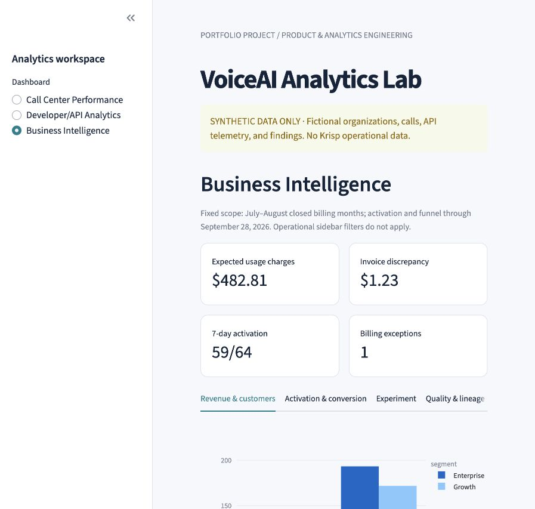

SYNTHETIC DATA ONLY01 / PRODUCT & COMMERCIAL ANALYTICS
VoiceAI Business Intelligence
A voice-AI analytics lab connecting operational performance, developer activation, closed-month usage charges and billing controls.
THE DECISIONReview the invoice exception.
Keep the onboarding result inconclusive.
Keep the onboarding result inconclusive.